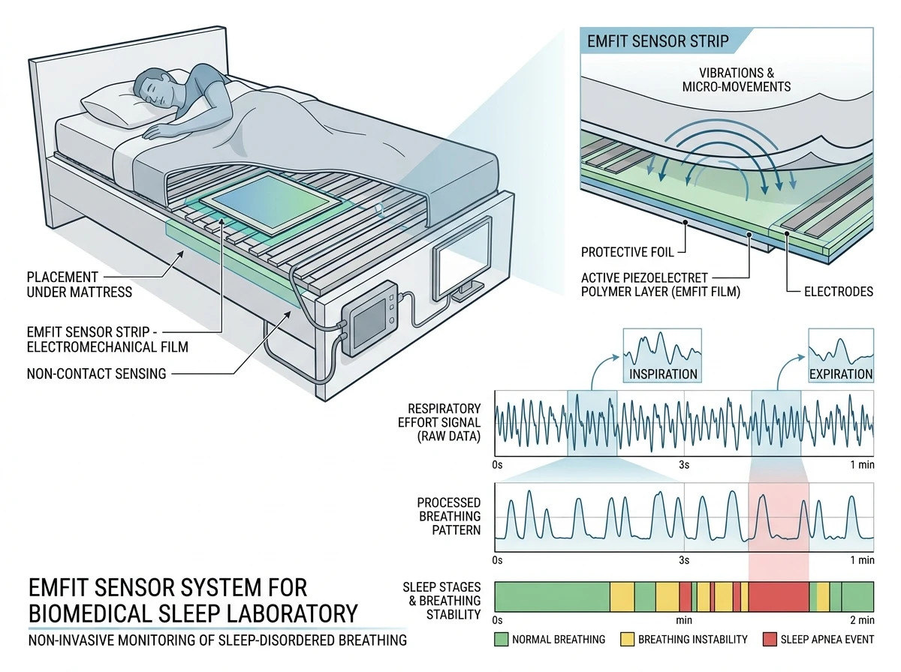

Published in EMBEC & NBC 2017, IFMBE Proceedings, vol. 65, pp. 777–780, Springer, Singapore. DOI: 10.1007/978-981-10-5122-7_194

This project focuses on analyzing breathing disorders and associated respiratory efforts using non-invasive mattress sensors.
Respiratory effort monitoring during sleep has traditionally required invasive methods, such as esophageal pressure monitoring via catheter, making it uncomfortable for patients. Recent advancements in contactless sensor technology, like the Emfit electromechanical film transducer, provide a less invasive alternative for measuring respiratory effort, snoring, and other sleep-related issues.
This study explores the use of the Emfit mattress sensor to detect increased breathing efforts by analyzing spectral data and identifying characteristic patterns like spiking, which indicates increased respiratory effort. The non-invasive nature and effectiveness of mattress-type sensors make them a promising tool for sleep-disordered breathing (SDB) screening.
The study produced the following outputs
Springer IFMBE Citation: J. M. Perez-Macias, J. Viik, A. Värri, S.-L. Himanen, and M. Tenhunen, "Time Characteristics of Prolonged Partial Obstruction Periods Using an Emfit Mattress," in EMBEC & NBC 2017, H. Eskola et al., Eds., IFMBE Proceedings, vol. 65, Springer, Singapore, 2017, pp. 777–780, doi: 10.1007/978-981-10-5122-7_194.
@inproceedings{perezmacias2017obstruction,
author = {Perez-Macias, Jose Maria and Viik, Jari and V{\"a}rri, Alpo and Himanen, Sari-Leena and Tenhunen, Mirja},
title = {Time Characteristics of Prolonged Partial Obstruction Periods Using an Emfit Mattress},
booktitle = {Joint Conference of the European Medical and Biological Engineering Conference (EMBEC) and the Nordic-Baltic Conference on Biomedical Engineering and Medical Physics (NBC)},
series = {IFMBE Proceedings},
volume = {65},
pages = {777--780},
year = {2017},
publisher = {Springer, Singapore},
doi = {10.1007/978-981-10-5122-7_194}
}